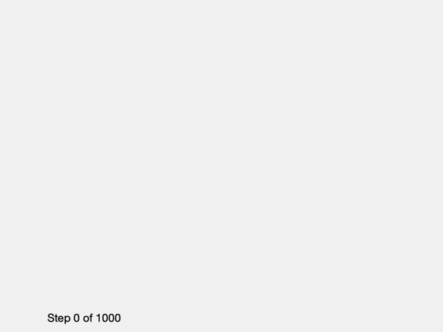
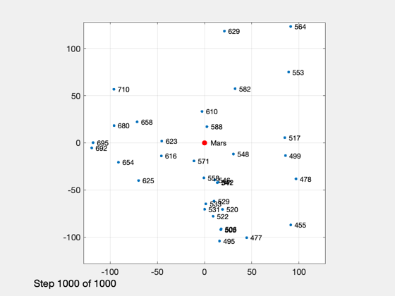
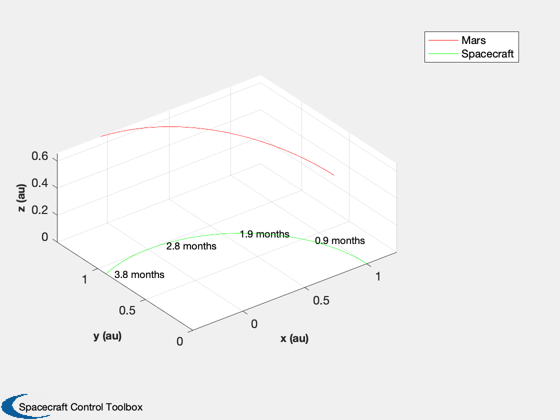
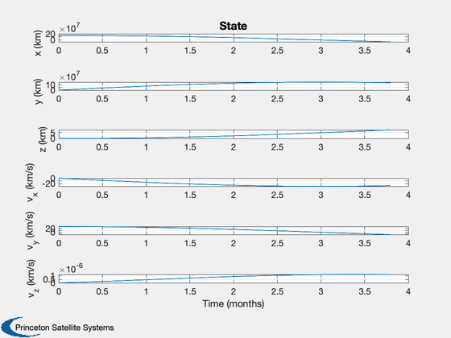
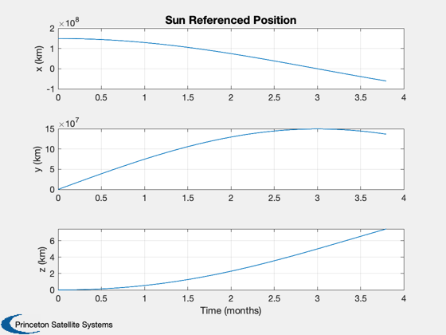
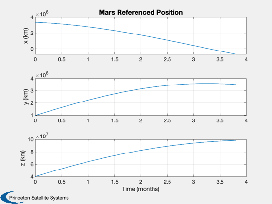
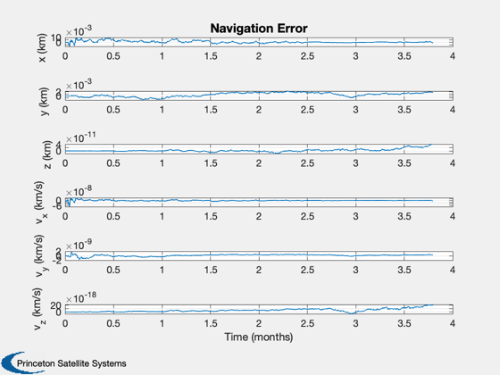
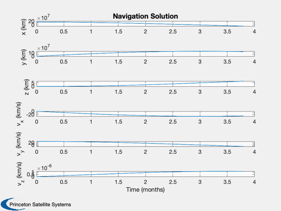
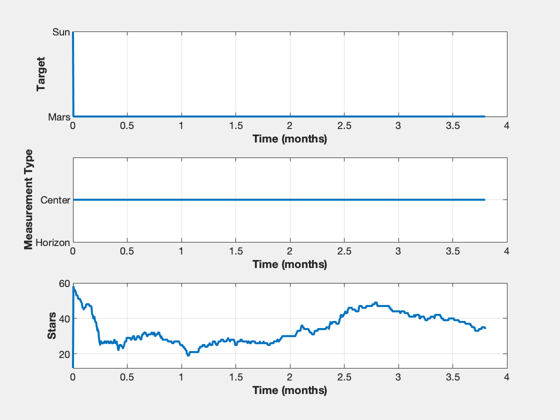
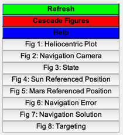

Simulate ONS for elements of a heliocentric mission
This only simulates the orbital motion. It is useful to compares this with ONSCisLunarSimulation.
The simulation allows for the sun and one planet. In this case the planet is Mars
See also: Constant, PlanetPosJPL, NavigationCamera, MeasGPS, MeasRangeGroundStation, MeasStarAngleAndChord, StarCameraViewer, RHSUKFHelioMission, OpticalNavigation, RHSHelioMission, RK4, Figui, Plot2D
Contents
%-------------------------------------------------------------------------- % Copyright (c) 2021 Princeton Satellite Systems, Inc. % All rights reserved. %-------------------------------------------------------------------------- % Since version 2021.1 %--------------------------------------------------------------------------
Constants
rM = Constant('equatorial radius mars'); rS = Constant('sun radius'); muSun = Constant('mu sun'); muMars = Constant('mu mars'); aU = Constant('au'); secToDay = 1/86400; secInYear = 365.26*86400; kMars = 4; % SPICE numbering 1-9 are the planets, 10 is the moon mars = 1; sun = 2; % Get the defaults dRHS = RHSHelioMission;
Script control
massFuel = 1000; % kg dRHS.mD = 1000; % kg viewersOn = true; printAll = false; % Names are 'solar orbit' 'mars orbit' simName = 'solar orbit'; % Initialize the Mars ephemeris PlanetPosJPL( 'initialize', kMars ) % Initialize the state for different scenarios % If you add a scenario you must specify a target below switch simName case 'solar orbit' x0 = aU; dRHS.ref = sun; x = [x0;0;0;0;sqrt(muSun/x0);0;massFuel]; dT = 10000; tEnd = 1000*dT; % sec jD0 = Date2JD([2024 8 3 0 0 0]); case 'mars orbit' x0 = 6000; dRHS.ref = mars; x = [x0;0;0;0;sqrt(muMars/x0);0;massFuel]; jD0 = Date2JD([2024 8 3 0 0 0]); dT = 10; tEnd = 6000; % sec otherwise error('%s is not a pre-defined simulation',simName); end % Set the Julian date for the dynamical model dRHS.jD0 = jD0; % Simulation steps n = ceil(tEnd/dT);
Setup the camera data structure
dCam = NavigationCamera; dGPS = MeasGPS; dGS = MeasRangeGroundStation; dOM = MeasStarAngleAndChord;
Add noise
dCam.camera.sigmaXY = 1;
dCam.camera.noise = true;
dCam.namePlanet = {'Mars', 'Sun'};
dCam.radiusPlanet = [rM rS];
Set up the displays
TimeDisplay('initialize','ONS Simulation',n); if( viewersOn ) hNav = StarCameraViewer('initialize','Navigation Camera', n ); %#ok<*UNRCH> end % The time vector t = (0:n-1)*dT;
Setup Optical Navigation
dONS = OpticalNavigation; r = x(1:3); v = x(4:6); dONS.ukf.fData = RHSUKFHelioMission; dONS.ukf.fData.jD0 = dRHS.jD0; switch simName case 'solar orbit' dONS.target = sun; dONS.ukf.fData.ref = sun; case 'mars orbit' dONS.target = mars; dONS.ukf.fData.ref = mars; otherwise error('%s does not have a specified target',simName); end % Initialize ONS dONS = OpticalNavigation( 'initialize', dONS, r, v, dT ); meas.optical = NavigationCamera( r, dCam ); % Set up the parameters in ONS dONS.t = t(1); dONS.useUKF = true; dONS.ukf.useOptical = false; dONS.ukf.useState = true; dONS.ukf.usePos = false; dONS.ukf.f = @RHSUKFHelioMission; dONS.aBody1 = rM; dONS.aBody2 = rS; % Plotting arrays xP = zeros(21,n); target = zeros(1,n); type = zeros(1,n); nStars = zeros(1,n);
Run the simulation
for k = 1:n % ONS simulation TimeDisplay('update',k); % Determine if the spacecraft has hit the ground if( dRHS.ref == mars ) h = Mag(x(1:3))-rM; else h = Mag(x(1:3))-rS; end % Get data for plotting [~,~,~,acc] = RHSHelioMission(x,t(k),dRHS); % Get the location and velocity of Mars [rMars,~,vMars] = PlanetPosJPL( 'update', jD0 + t(k)*secToDay ); if( dRHS.ref == mars ) dCam.xPlanet = [[0;0;0] -rMars]; rMars = [0;0;0]; vMars = [0;0;0]; else dCam.xPlanet = [rMars [0;0;0]]; end % Stop on landing if( h <= 0 ) break; end % The camera boresight points at the target xCam is in the ECI frame if( dRHS.ref == sun ) rCam = x(1:3); vCam = x(4:6); else rCam = dCam.xPlanet(:,1) - x(1:3); vCam = vMars - x(4:6); end % Needed to point the camera dONS = OpticalNavigation( 'get unit vector', dONS, rMars, vMars, rCam, vCam ); % Get the measurements meas.jD0 = jD0 + t(k)*secToDay; meas.state = x(1:6); meas.acc = acc; dCam.q = U2Q(dONS.uC,[0;0;1]); dOM.cam = NavigationCamera( rCam, dCam ); dOM.type = dONS.type; dOM.target = dONS.target; dOM.ref = dRHS.ref; dOM.uCamera = dONS.uCamera; dOM.aBody1 = dONS.aBody1; dOM.aBody2 = dONS.aBody2; dOM.r1 = rMars; dOM.v1 = vMars; meas.state = x(1:6); meas.acc = acc; % Spacecraft non-gravitational acceleration meas.gps = MeasGPS( x, dGPS ); meas.gs = MeasRangeGroundStation( x, dGS ); meas.optical = MeasStarAngleAndChord( [rCam;vCam], dOM ); % ONS dONS.cam = dOM.cam; dONS.ref = dRHS.ref; dONS.r1 = dOM.r1; dONS.v1 = dOM.v1; dONS.t = t(k); target(k) = dONS.target; type(k) = dONS.type; dONS = OpticalNavigation( 'update', dONS, meas, rMars, vMars, rCam, vCam ); nStars(k) = dONS.ukf.optical.nStars; % Display the cameras if( viewersOn ) StarCameraViewer('update', dOM.cam, [], hNav, dCam, k); end xP(:,k) = [x;rMars;dRHS.thrust;dRHS.ref;h;dONS.x]; % Propagate the state x = RK4(@RHSHelioMission,x,dT,t(k),dRHS); end TimeDisplay('close');
Plotting
% Shorten the vectors if it hits the ground j = 1:k; xP = xP(:,j); t = t(j); target = target(j); type = type(j); nStars = nStars(j); % Make earth and moon reference position rSun = zeros(3,k); rMars = zeros(3,k); j = find(xP(14,:) == mars ); rMars(:,j) = xP(1:3,j); rSun(:,j) = xP(8:10,j) - rMars(:,j); j = find(xP(14,:) == sun ); rSun(:,j) = xP(1:3,j); rMars(:,j) = xP(8:10,j) + rSun(:,j); % Sun/Mars plot HelioPlot( 4, t(end)/secInYear, jD0, xP(1:3,:), {'Spacecraft'} ) % Time histories [t,tL] = TimeLabl(t); yL = {'x (km)' 'y (km)' 'z (km)'}; yD = {'a_x (km/s^2)' 'a_y (km/s^2)' 'a_z (km/s^2)' 'H (km)' '|a| (km/s^2)'}; yS = {'x (km)' 'y (km)' 'z (km)' 'v_x (km/s)' 'v_y (km/s)' 'v_z (km/s)'}; Plot2D(t,xP(1:6,:),tL,yS,'State'); Plot2D(t,rSun, tL,yL,'Sun Referenced Position'); Plot2D(t,rMars,tL,yL,'Mars Referenced Position'); Plot2D(t,xP(16:21,:) - xP(1:6,:),tL,yS,'Navigation Error'); Plot2D(t,xP(16:21,:),tL,yS,'Navigation Solution'); NewFig('Targeting') subplot(3,1,1); h = plot(t,target); set(h,'linewidth',2); grid on XLabelS(tL); YLabelS('Target') set(gca,'ytick',[1 2],'yticklabel',{'Mars' 'Sun'}); subplot(3,1,2); h = plot(t,type); set(h,'linewidth',2); grid on XLabelS(tL); YLabelS('Measurement Type') set(gca,'ytick',[1 2],'yticklabel',{'Horizon' 'Center'}); subplot(3,1,3); h = plot(t,nStars); set(h,'linewidth',2); grid on XLabelS(tL); YLabelS('Stars') Figui if( printAll ) n = get(gcf,'number'); for k = 1:n PrintFig(1,4,k,sprintf('%s%d',simName,k)); end end %--------------------------------------       